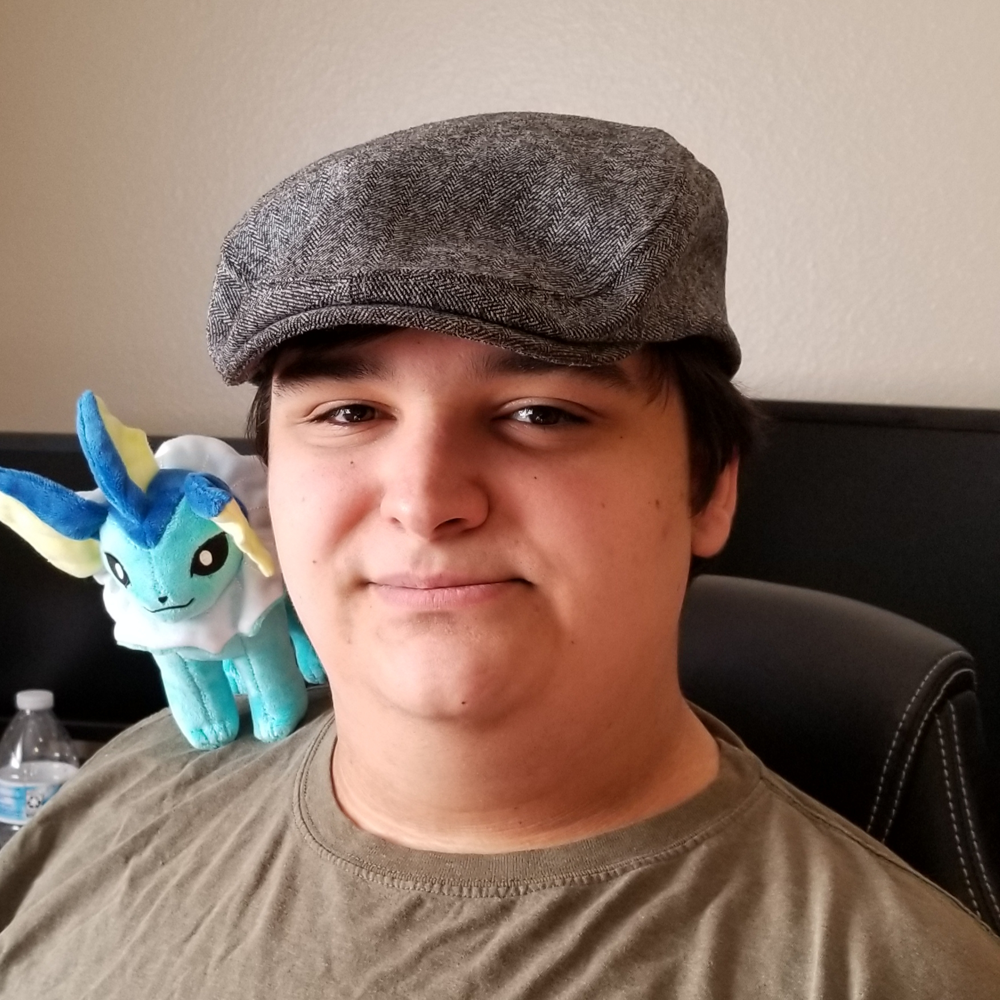

A creative mind who also goes by the web handle DomTSVG.
You've probably never heard of me, and that isn't something I blame you for. Considering that I'm working on finishing university and have yet to find purchase in a particular field, career, or company, you're likely thinking "Hey, who is this guy and why am I bothering to read his website?" I'm majoring in Media Arts, also known as Digital Media, and I'm very close to graduation. However, you can actually see a large set of my work out on the internet right now. My online handle, DomTSVG (which stands for "Dom; Twitch Streams, Videos, and Games"), is shared among many of the various sites and services. You can find most of my work under those handles, like games, videos, and artwork. I'm a well rounded creative with skills and experience in many a hobby and trade in the digital realm.
I grew up in rural Montana, right on the shore of Flathead Lake. I like to think of myself as a digital creative that has a grounding, connected to the things that matter. I was raised on wonderful values and I'm a hard worker. Trust me, I understand what a good days work is! You won't catch me slacking in the creative or laborous section of your project or any of my own. I give it my all, and I like to think that after growing up in such a gorgeous place the natural beauty has rubbed off on me and shows in my pieces.
Thinking on how this static site's development went, I guess I just ended up making an advertisement for myself. Starting on that thought and thinking about where I began, I wanted to use a theme of natural greens (which are my favorite colors) and some photos of home to really hit home that my roots are what made me who I am. Rounded boxing and images tied to the text they appear beside keeps things nice and neat, which I like. Big text also helps make sure that things are easy to read, and fit well within the boxes.